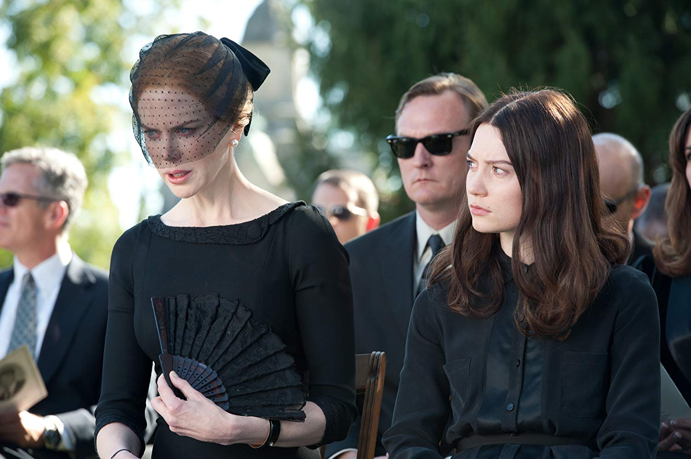
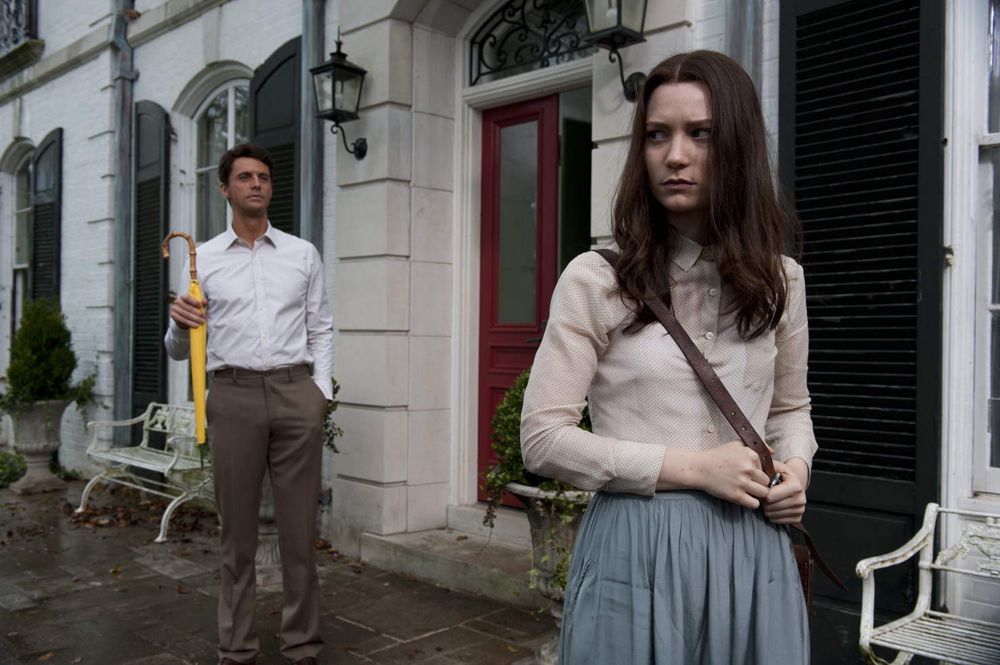

<!DOCTYPE html>
<html lang="ko">
<head>
    <meta charset="UTF-8"/>
    <meta name="viewport" content="width=device-width, initial-scale=1.0">
    <meta http-equiv="X-UA-Compatible" content="ie=edge">
    <title>Layout</title>
    <link rel="stylesheet" href="./css/style.css"/>
    <link rel="stylesheet" href="./css/family.css"/>
    <link rel="stylesheet" href="./css/fadein.css">
    <script src="./WOW-master/dist/wow.min.js"></script>
</head>
<body>
<h1 class="blind">Family</h1>
      <header id="head">
        <nav id="main-navigation" class="navigation">
                <div class="nav-content">
                        <a href="#" class="logo">
                            <div class="logo-text">Stoker</div>
                        </a>
                        <div class="hamburger-menu">
                            <div class="hamburger"></div>
                        </div>
                    </div>
                    <div class="menu-container">
                        <ul class="menu">
                            <li class="menu-link"><a class="link" href="index.html">Home</a></li>
                            <li class="menu-link"><a class="link" href="family.html">Family</a></li>
                            <li class="menu-link"><a class="link" href="india.html">India Stoker</a></li>
                            <li class="menu-link menu-line"></li>
                            <li class="menu-link"><a class="link" href="Duet.html">Duet</a></li>
                        </ul>
                        <div class="menu-info">
                                <p>Copyrightⓒ2013 STOKER All rights reserved.</p>
                        </div>
                  </div>
        </nav>
    </header>
<div id="main">
  <!-- image slider -->
    <div class="slide-container">
        <div class="slides change">
            <header class="header">
                <div class="container">
                  <figure class="avatar">
                      
                  </figure>
                  <h1>The family </h1>
                  <p>sometimes you need to do something bad to stop you from doing something worse.</p>
                  <span id="edit">Secret</span>
                </div>
              </header>
              <!-- content pop up  -->
              <div class="box-modal">
                <div class="overlay"></div>
                <div class="body-modal">
                  <div class="inner-body-modal">
                      <iframe src="https://www.imdb.com/videoembed/vi1549182745" allowfullscreen width="854" height="400"></iframe>                  </div>
                </div>
              </div>
        </div>
        <div class="slides change">
            <header class="header">
                <div class="container">
                  <figure class="avatar">
                      
                  </figure>
                  <h1>Evelyn Stoker</h1>
                  <p>부잣집에서 곱게 자란 이블린은 스토커 가문에 들어온 후 외딴 저택에 갇혀 지내게 된다.
                    인디아가 태어난 후 남편 리차드와 삼촌 리차드 마저 딸 인디아를 빼앗아 가자,
                    모든 것을 딸이 빼앗아 갔다고 생각하며 딸을 증오하게 된다.
                  </p>

                </div>
              </header>
              <!-- content pop up  -->
              <div class="box-modal">
                <div class="overlay"></div>
                <div class="body-modal">
                  <div class="inner-body-modal">
                      <iframe src="https://www.imdb.com/videoembed/vi2656871449" allowfullscreen width="854" height="400"></iframe>
                  </div>
                </div>
              </div>
        </div>
        <div class="slides change">
            <header class="header">
                <div class="container">
                  <figure class="avatar">
                      
                  </figure>
                  <h1>Charlie Stoker</h1>
                  <p>인디아의 기념일마다 편지를 보내 온 찰리.
                    찰리는 자신의 본색과 비밀을 인디아에게 드러내며 스니커즈를 벗기고 굽이 있는 높은 구두를 신겨주며 눈을 맞춘다.
                    같은 사냥꾼의 피가 흐르는 인디아와 찰리는 그 날로 이어져 내일을 약속한다.
                  </p>
                </div>
              </header>
              <!-- content pop up  -->
              <div class="box-modal">
                <div class="overlay"></div>
                <div class="body-modal">
                  <div class="inner-body-modal">
                      <iframe src="https://www.imdb.com/videoembed/vi2656871449" allowfullscreen width="854" height="400"></iframe>
                  </div>
                </div>
              </div>
        </div>
        <div class="slides change">
            <header class="header">
                <div class="container">
                  <figure class="avatar">
                      
                  </figure>
                  <h1>Richard Stoker</h1>
                  <p>
                    인디아의 본성을 먼저 알아차린 리차드는 본능을 조절할 수 있도록 사냥하는 방법을 알려준다.
                    무자비한 찰리와 다르게 인내하는 방법을 알려주어 충동을 조절할 수 있도록 도와준다.
                    18번째 생일을 맞은 인디아에게 준 선물은 찰리의 비밀을 담긴 상자의 열쇠였다.
                  </p>
                </div>
              </header>
              <!-- content pop up  -->
              <div class="box-modal">
                <div class="overlay"></div>
                <div class="body-modal">
                  <div class="inner-body-modal">
                      <iframe src="https://www.imdb.com/videoembed/vi2656871449" allowfullscreen width="854" height="400"></iframe>
                  </div>
                </div>
              </div>
        </div>
      
        </div>
        <div class="dot-container">
            <span class="dot" onclick="currentSlide(1)"></span> 
            <span class="dot" onclick="currentSlide(2)"></span> 
            <span class="dot" onclick="currentSlide(3)"></span> 
            <span class="dot" onclick="currentSlide(4)"></span> 
        </div>
</div>  
<div id="cursor-dot">&nbsp;</div>
<div id="cursor-bg">&nbsp;</div>
<div id="progress"><span>&nbsp;</span></div>
<!-- <footer id="global-footer">
    <div class="gf-content">
        <h2>Footer</h2>
    </div>
</footer> -->
<div class="notice"></div>
<script src="https://cdnjs.cloudflare.com/ajax/libs/jquery/3.2.1/jquery.min.js"></script>
<script src="https://cdnjs.cloudflare.com/ajax/libs/jquery/3.2.1/jquery.slim.js"></script>
<script src="./vendor/gsap/TweenMax.min.js" type="text/javascript"></script>
<script src="./js/script.js"></script>
<script src="./js/slider.js"></script>
<script src="./js/cursor.js"></script>
<script>

    new WOW().init();

</script>
<script>
    $('#edit').on('click', function(){
    $('.slide_img').addClass('active-modal');
    $('.logo-text').addClass('active-modal');
    $('.box-modal').addClass('modal-show');
  
  });
  
  $('.overlay').on('click', function(){
    $('.slide_img').removeClass('active-modal');
    $('.logo-text').removeClass('active-modal');
    $('.box-modal').removeClass('modal-show');
  })
  
  </script>
</body>
</html>